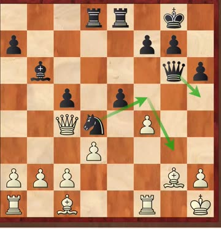
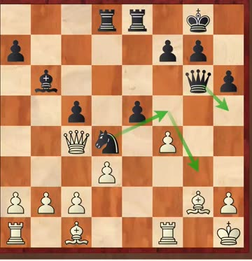
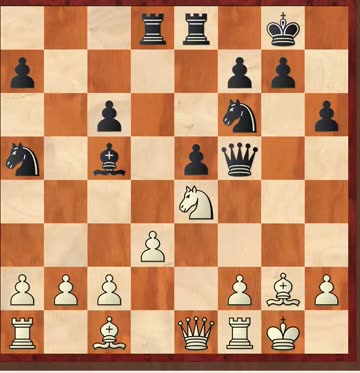
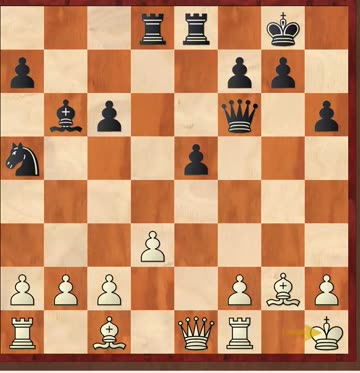
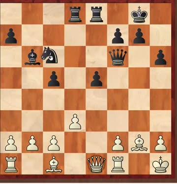
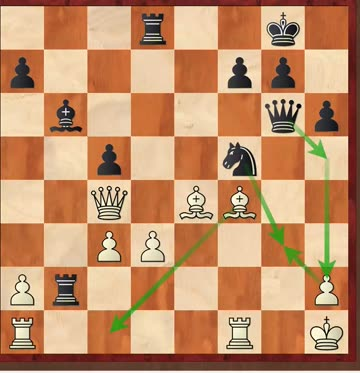
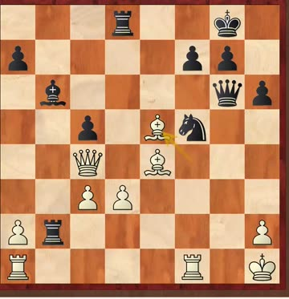
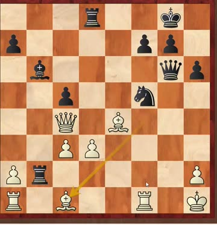

First class of the new semester
Coach opened with how the class runs. Worth knowing, because two of these are things you can lose marks on without realising.
Main theme: openings — and how to study them. Not just memorising moves, but how to build a line you can call your own.
World champions continue. Last term ended with Spassky. So this term starts with the man who beat him: Bobby Fischer.
425 — a queen sacrifice for mate: refuse it and you're lost anyway; accept it and you're mated.
426 — the one worth remembering. The obvious flashy move looks like mate, but the opponent has a check first, and it all falls apart. You have to play the quiet knight move before the pretty one.
The habit: before you commit to a beautiful tactic, look for your opponent's checks. This exact mistake came up again later in the class.
Coach had watched the Esports World Cup chess final that same morning — Carlsen won it again, and $250,000 — and played the clip because Carlsen finished with a queen sacrifice.
But he was careful to separate two different things:
C59 Two Knights Defence · Poughkeepsie 1963 · a simultaneous exhibition — Fischer playing many boards at once. In 1963 he was already US champion; he wouldn't be world champion until 1972.
His opponent refused to trade pieces at all, because he wanted to beat Fischer rather than draw with him. It didn't work.
1. Read what your opponent wants — before you move. This is the big one, and Coach spent the most time on it. Fischer was doing this instantly, on every board, while walking between them.


2. Two bishops want open lines. Coach liked Kh1 — a quiet king move that prepares to blow the position open so the bishops get to work.



He also repeated Teacher Gao's line about knights on the edge — “马到边上去吃草”, the knight has wandered off to graze. Keep them central where they do something.
3. The finish — and the trap the class fell into. Coach asked for the simple move that wins material. Several kids went for a flashy discovered double attack with the bishop. It loses on the spot to a knight check and mate. The answer was the quiet one:



Coach closed by saying he'd show White's various tries against the Two Knights Defence, and his own recommended line, the following week — and he did. That's in the 22 Aug record.